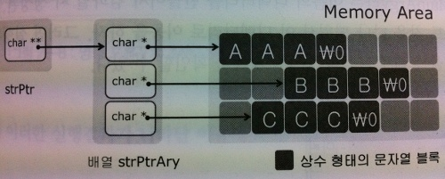

C언어 스터디 2팀
main 함수로의 인자전달
함수 포인터와 void 포인터
발표자: 조한영
main 함수의 유형
- 유형 2
int main (int argc, char *argv[])
{
}
예제코드:
Exam-code
char *argv[]
[any material that should appear in print but not on the slide]
char *argv[]
- 문자열 포인터 배열과 char형 포인터의 포인터

[any material that should appear in print but not on the slide]
main 함수로의 문자열 전달
int main (int argc, char *argv[])
argc : main 함수의 첫 번째 전달인자로 문자열의 개수 정보 의미한다.
*argv[] : 두 번째 전달 인자로는 char형 포인터 배열의 주소값이 전달된다.
(argv의 마지막 요소는 NULL 로 끝나게 된다.)
함수 포인터 (Function Pointer)
함수의 이름이 제공하는 두 가지
- 함수가 위치하고 있는 주소 값의 확인
ex) printf ("func_one의 주소 값 : %#x \n", func_one);
예제코드:
Exam-code
함수 포인터 (Function Pointer)
함수 포인터 변수 선어
- int (*funcptr) (int arg);
int : 반환형
(*funcptr) : 함수 포인터 변수
(int) : int형 매개변수
함수의 원형 선언
- int *funcptr (int)
int *: 반환형
funcptr : 함수명
(int) : int형 매개변수
예제코드:
Exam-code